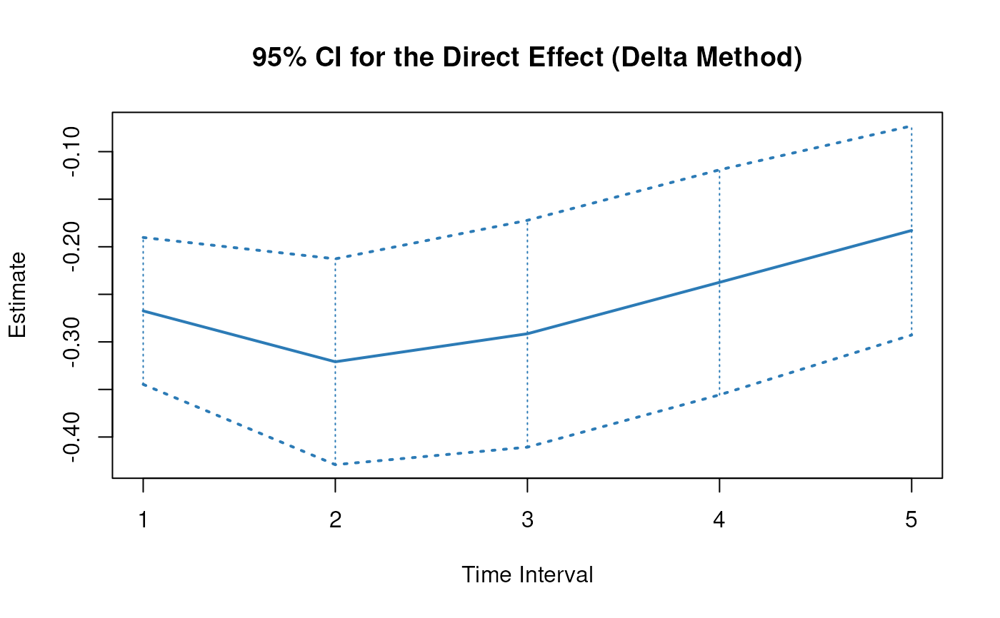
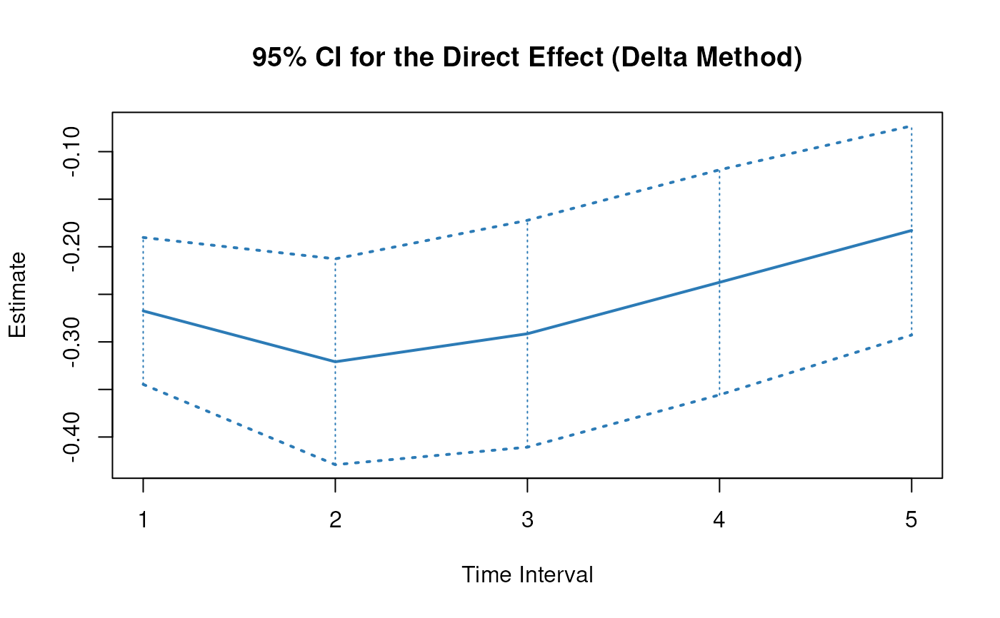

Delta Method Sampling Variance-Covariance Matrix for the Total, Direct, and Indirect Effects of X on Y Through M Over a Specific Time-Interval or a Range of Time-Intervals
Source:R/cTMed-delta-med.R
DeltaMed.RdThis function computes the delta method sampling variance-covariance matrix for the total, direct, and indirect effects of the independent variable \(X\) on the dependent variable \(Y\) through mediator variables \(\mathbf{m}\) over a specific time-interval \(\Delta t\) or a range of time-intervals using the first-order stochastic differential equation model's drift matrix \(\boldsymbol{\Phi}\).
Arguments
- phi
Numeric matrix. The drift matrix (\(\boldsymbol{\Phi}\)).
phishould have row and column names pertaining to the variables in the system.- vcov_phi_vec
Numeric matrix. The sampling variance-covariance matrix of \(\mathrm{vec} \left( \boldsymbol{\Phi} \right)\).
- delta_t
Vector of positive numbers. Time interval (\(\Delta t\)).
- from
Character string. Name of the independent variable \(X\) in
phi.- to
Character string. Name of the dependent variable \(Y\) in
phi.- med
Character vector. Name/s of the mediator variable/s in
phi.- ncores
Positive integer. Number of cores to use. If
ncores = NULL, use a single core. Consider using multiple cores when the length ofdelta_tis long.
Value
Returns an object
of class ctmeddelta which is a list with the following elements:
- call
Function call.
- args
Function arguments.
- fun
Function used (DeltaMed).
- output
A list with length of
length(delta_t).
Each element in the output list has the following elements:
- delta_t
Time-interval.
- jacobian
Jacobian matrix.
,
- est
Estimated total, direct, and indirect effects.
,
- vcov
Sampling variance-covariance matrix of the estimated total, direct, and indirect effects.
Details
See Total(),
Direct(), and
Indirect() for more details.
Delta Method
Let \(\boldsymbol{\theta}\) be \(\mathrm{vec} \left( \boldsymbol{\Phi} \right)\), that is, the elements of the \(\boldsymbol{\Phi}\) matrix in vector form sorted column-wise. Let \(\hat{\boldsymbol{\theta}}\) be \(\mathrm{vec} \left( \hat{\boldsymbol{\Phi}} \right)\). By the multivariate central limit theory, the function \(\mathbf{g}\) using \(\hat{\boldsymbol{\theta}}\) as input can be expressed as:
$$ \sqrt{n} \left( \mathbf{g} \left( \hat{\boldsymbol{\theta}} \right) - \mathbf{g} \left( \boldsymbol{\theta} \right) \right) \xrightarrow[]{ \mathrm{D} } \mathcal{N} \left( 0, \mathbf{J} \boldsymbol{\Gamma} \mathbf{J}^{\prime} \right) $$
where \(\mathbf{J}\) is the matrix of first-order derivatives of the function \(\mathbf{g}\) with respect to the elements of \(\boldsymbol{\theta}\) and \(\boldsymbol{\Gamma}\) is the asymptotic variance-covariance matrix of \(\hat{\boldsymbol{\theta}}\).
From the former, we can derive the distribution of \(\mathbf{g} \left( \hat{\boldsymbol{\theta}} \right)\) as follows:
$$ \mathbf{g} \left( \hat{\boldsymbol{\theta}} \right) \approx \mathcal{N} \left( \mathbf{g} \left( \boldsymbol{\theta} \right) , n^{-1} \mathbf{J} \boldsymbol{\Gamma} \mathbf{J}^{\prime} \right) $$
The uncertainty associated with the estimator \(\mathbf{g} \left( \hat{\boldsymbol{\theta}} \right)\) is, therefore, given by \(n^{-1} \mathbf{J} \boldsymbol{\Gamma} \mathbf{J}^{\prime}\) . When \(\boldsymbol{\Gamma}\) is unknown, by substitution, we can use the estimated sampling variance-covariance matrix of \(\hat{\boldsymbol{\theta}}\), that is, \(\hat{\mathbb{V}} \left( \hat{\boldsymbol{\theta}} \right)\) for \(n^{-1} \boldsymbol{\Gamma}\). Therefore, the sampling variance-covariance matrix of \(\mathbf{g} \left( \hat{\boldsymbol{\theta}} \right)\) is given by
$$ \mathbf{g} \left( \hat{\boldsymbol{\theta}} \right) \approx \mathcal{N} \left( \mathbf{g} \left( \boldsymbol{\theta} \right) , \mathbf{J} \hat{\mathbb{V}} \left( \hat{\boldsymbol{\theta}} \right) \mathbf{J}^{\prime} \right) . $$
Linear Stochastic Differential Equation Model
The measurement model is given by $$ \mathbf{y}_{i, t} = \boldsymbol{\nu} + \boldsymbol{\Lambda} \boldsymbol{\eta}_{i, t} + \boldsymbol{\varepsilon}_{i, t}, \quad \mathrm{with} \quad \boldsymbol{\varepsilon}_{i, t} \sim \mathcal{N} \left( \mathbf{0}, \boldsymbol{\Theta} \right) $$ where \(\mathbf{y}_{i, t}\), \(\boldsymbol{\eta}_{i, t}\), and \(\boldsymbol{\varepsilon}_{i, t}\) are random variables and \(\boldsymbol{\nu}\), \(\boldsymbol{\Lambda}\), and \(\boldsymbol{\Theta}\) are model parameters. \(\mathbf{y}_{i, t}\) represents a vector of observed random variables, \(\boldsymbol{\eta}_{i, t}\) a vector of latent random variables, and \(\boldsymbol{\varepsilon}_{i, t}\) a vector of random measurement errors, at time \(t\) and individual \(i\). \(\boldsymbol{\nu}\) denotes a vector of intercepts, \(\boldsymbol{\Lambda}\) a matrix of factor loadings, and \(\boldsymbol{\Theta}\) the covariance matrix of \(\boldsymbol{\varepsilon}\).
An alternative representation of the measurement error is given by $$ \boldsymbol{\varepsilon}_{i, t} = \boldsymbol{\Theta}^{\frac{1}{2}} \mathbf{z}_{i, t}, \quad \mathrm{with} \quad \mathbf{z}_{i, t} \sim \mathcal{N} \left( \mathbf{0}, \mathbf{I} \right) $$ where \(\mathbf{z}_{i, t}\) is a vector of independent standard normal random variables and \( \left( \boldsymbol{\Theta}^{\frac{1}{2}} \right) \left( \boldsymbol{\Theta}^{\frac{1}{2}} \right)^{\prime} = \boldsymbol{\Theta} . \)
The dynamic structure is given by $$ \mathrm{d} \boldsymbol{\eta}_{i, t} = \left( \boldsymbol{\iota} + \boldsymbol{\Phi} \boldsymbol{\eta}_{i, t} \right) \mathrm{d}t + \boldsymbol{\Sigma}^{\frac{1}{2}} \mathrm{d} \mathbf{W}_{i, t} $$ where \(\boldsymbol{\iota}\) is a term which is unobserved and constant over time, \(\boldsymbol{\Phi}\) is the drift matrix which represents the rate of change of the solution in the absence of any random fluctuations, \(\boldsymbol{\Sigma}\) is the matrix of volatility or randomness in the process, and \(\mathrm{d}\boldsymbol{W}\) is a Wiener process or Brownian motion, which represents random fluctuations.
References
Bollen, K. A. (1987). Total, direct, and indirect effects in structural equation models. Sociological Methodology, 17, 37. doi:10.2307/271028
Deboeck, P. R., & Preacher, K. J. (2015). No need to be discrete: A method for continuous time mediation analysis. Structural Equation Modeling: A Multidisciplinary Journal, 23 (1), 61–75. doi:10.1080/10705511.2014.973960
Ryan, O., & Hamaker, E. L. (2021). Time to intervene: A continuous-time approach to network analysis and centrality. Psychometrika, 87 (1), 214–252. doi:10.1007/s11336-021-09767-0
Examples
data("deboeck2015phi", package = "cTMed")
phi <- deboeck2015phi$dynr$phi
vcov_phi_vec <- deboeck2015phi$dynr$vcov
# Specific time-interval ----------------------------------------------------
DeltaMed(
phi = phi,
vcov_phi_vec = vcov_phi_vec,
delta_t = 1,
from = "x",
to = "y",
med = "m"
)
#> $`1`
#> interval est se z p 2.5% 97.5%
#> total 1 -0.1175 0.0315 -3.7269 2e-04 -0.1793 -0.0557
#> direct 1 -0.3052 0.0416 -7.3384 0e+00 -0.3867 -0.2237
#> indirect 1 0.1877 0.0199 9.4502 0e+00 0.1488 0.2267
#>
# Range of time-intervals ---------------------------------------------------
delta <- DeltaMed(
phi = phi,
vcov_phi_vec = vcov_phi_vec,
delta_t = 1:20,
from = "x",
to = "y",
med = "m"
)
# Methods -------------------------------------------------------------------
# DeltaMed has a number of methods including
# print, summary, confint, and plot
print(delta)
#> $`1`
#> interval est se z p 2.5% 97.5%
#> total 1 -0.1175 0.0315 -3.7269 2e-04 -0.1793 -0.0557
#> direct 1 -0.3052 0.0416 -7.3384 0e+00 -0.3867 -0.2237
#> indirect 1 0.1877 0.0199 9.4502 0e+00 0.1488 0.2267
#>
#> $`2`
#> interval est se z p 2.5% 97.5%
#> total 2 0.0896 0.0367 2.4399 0.0147 0.0176 0.1617
#> direct 2 -0.3547 0.0483 -7.3376 0.0000 -0.4495 -0.2600
#> indirect 2 0.4444 0.0396 11.2290 0.0000 0.3668 0.5219
#>
#> $`3`
#> interval est se z p 2.5% 97.5%
#> total 3 0.2856 0.0380 7.5238 0 0.2112 0.3599
#> direct 3 -0.3146 0.0466 -6.7491 0 -0.4059 -0.2232
#> indirect 3 0.6001 0.0514 11.6704 0 0.4993 0.7009
#>
#> $`4`
#> interval est se z p 2.5% 97.5%
#> total 4 0.3966 0.0381 10.4192 0 0.3220 0.4712
#> direct 4 -0.2521 0.0428 -5.8971 0 -0.3359 -0.1683
#> indirect 4 0.6487 0.0590 11.0018 0 0.5332 0.7643
#>
#> $`5`
#> interval est se z p 2.5% 97.5%
#> total 5 0.4311 0.0389 11.0961 0 0.3550 0.5073
#> direct 5 -0.1924 0.0382 -5.0400 0 -0.2672 -0.1176
#> indirect 5 0.6235 0.0630 9.9000 0 0.5001 0.7469
#>
#> $`6`
#> interval est se z p 2.5% 97.5%
#> total 6 0.4150 0.0400 10.3691 0 0.3366 0.4935
#> direct 6 -0.1429 0.0333 -4.2893 0 -0.2082 -0.0776
#> indirect 6 0.5579 0.0636 8.7769 0 0.4333 0.6825
#>
#> $`7`
#> interval est se z p 2.5% 97.5%
#> total 7 0.3717 0.0407 9.1416 0e+00 0.2920 0.4514
#> direct 7 -0.1045 0.0285 -3.6683 2e-04 -0.1604 -0.0487
#> indirect 7 0.4762 0.0612 7.7753 0e+00 0.3562 0.5963
#>
#> $`8`
#> interval est se z p 2.5% 97.5%
#> total 8 0.3174 0.0403 7.8752 0.0000 0.2384 0.3964
#> direct 8 -0.0758 0.0239 -3.1658 0.0015 -0.1227 -0.0289
#> indirect 8 0.3932 0.0569 6.9113 0.0000 0.2817 0.5047
#>
#> $`9`
#> interval est se z p 2.5% 97.5%
#> total 9 0.2622 0.0390 6.7145 0.0000 0.1856 0.3387
#> direct 9 -0.0546 0.0198 -2.7611 0.0058 -0.0934 -0.0158
#> indirect 9 0.3168 0.0515 6.1553 0.0000 0.2159 0.4176
#>
#> $`10`
#> interval est se z p 2.5% 97.5%
#> total 10 0.2113 0.0372 5.6842 0.0000 0.1384 0.2841
#> direct 10 -0.0392 0.0161 -2.4339 0.0149 -0.0708 -0.0076
#> indirect 10 0.2505 0.0458 5.4695 0.0000 0.1607 0.3403
#>
#> $`11`
#> interval est se z p 2.5% 97.5%
#> total 11 0.1671 0.0349 4.7814 0.0000 0.0986 0.2356
#> direct 11 -0.0281 0.0130 -2.1673 0.0302 -0.0536 -0.0027
#> indirect 11 0.1952 0.0404 4.8259 0.0000 0.1159 0.2745
#>
#> $`12`
#> interval est se z p 2.5% 97.5%
#> total 12 0.1302 0.0325 4.0016 0.0001 0.0664 0.1940
#> direct 12 -0.0201 0.0103 -1.9480 0.0514 -0.0404 0.0001
#> indirect 12 0.1503 0.0357 4.2137 0.0000 0.0804 0.2202
#>
#> $`13`
#> interval est se z p 2.5% 97.5%
#> total 13 0.1002 0.0300 3.3398 0.0008 0.0414 0.1591
#> direct 13 -0.0144 0.0082 -1.7656 0.0775 -0.0304 0.0016
#> indirect 13 0.1146 0.0315 3.6382 0.0003 0.0529 0.1764
#>
#> $`14`
#> interval est se z p 2.5% 97.5%
#> total 14 0.0764 0.0274 2.7879 0.0053 0.0227 0.1302
#> direct 14 -0.0103 0.0064 -1.6123 0.1069 -0.0228 0.0022
#> indirect 14 0.0867 0.0279 3.1123 0.0019 0.0321 0.1414
#>
#> $`15`
#> interval est se z p 2.5% 97.5%
#> total 15 0.0578 0.0248 2.3337 0.0196 0.0093 0.1064
#> direct 15 -0.0074 0.0050 -1.4820 0.1383 -0.0171 0.0024
#> indirect 15 0.0652 0.0246 2.6470 0.0081 0.0169 0.1134
#>
#> $`16`
#> interval est se z p 2.5% 97.5%
#> total 16 0.0434 0.0221 1.9631 0.0496 0.0001 0.0868
#> direct 16 -0.0053 0.0038 -1.3704 0.1706 -0.0128 0.0023
#> indirect 16 0.0487 0.0217 2.2470 0.0246 0.0062 0.0911
#>
#> $`17`
#> interval est se z p 2.5% 97.5%
#> total 17 0.0324 0.0195 1.6617 0.0966 -0.0058 0.0706
#> direct 17 -0.0038 0.0029 -1.2738 0.2027 -0.0095 0.0020
#> indirect 17 0.0362 0.0189 1.9101 0.0561 -0.0009 0.0733
#>
#> $`18`
#> interval est se z p 2.5% 97.5%
#> total 18 0.0241 0.0170 1.4163 0.1567 -0.0092 0.0574
#> direct 18 -0.0027 0.0023 -1.1895 0.2342 -0.0071 0.0017
#> indirect 18 0.0268 0.0164 1.6297 0.1032 -0.0054 0.0589
#>
#> $`19`
#> interval est se z p 2.5% 97.5%
#> total 19 0.0178 0.0146 1.2159 0.2240 -0.0109 0.0465
#> direct 19 -0.0019 0.0017 -1.1154 0.2647 -0.0053 0.0015
#> indirect 19 0.0197 0.0141 1.3977 0.1622 -0.0079 0.0473
#>
#> $`20`
#> interval est se z p 2.5% 97.5%
#> total 20 0.0131 0.0125 1.0514 0.2931 -0.0113 0.0375
#> direct 20 -0.0014 0.0013 -1.0498 0.2938 -0.0039 0.0012
#> indirect 20 0.0145 0.0120 1.2060 0.2278 -0.0090 0.0380
#>
summary(delta)
#> effect interval est se z p
#> 1 total 1 -0.117484662 0.031523024 -3.726948 1.938127e-04
#> 2 direct 1 -0.305215245 0.041591576 -7.338391 2.161769e-13
#> 3 indirect 1 0.187730583 0.019865240 9.450205 3.381685e-21
#> 4 total 2 0.089649670 0.036743895 2.439852 1.469328e-02
#> 5 direct 2 -0.354707332 0.048340825 -7.337635 2.174010e-13
#> 6 indirect 2 0.444357002 0.039572175 11.229027 2.936964e-29
#> 7 total 3 0.285551674 0.037953035 7.523817 5.319994e-14
#> 8 direct 3 -0.314584160 0.046611344 -6.749090 1.487752e-11
#> 9 indirect 3 0.600135834 0.051423655 11.670424 1.805222e-31
#> 10 total 4 0.396605704 0.038064858 10.419209 2.026315e-25
#> 11 direct 4 -0.252121939 0.042753802 -5.897065 3.700246e-09
#> 12 indirect 4 0.648727643 0.058965679 11.001784 3.746469e-28
#> 13 total 5 0.431122443 0.038853622 11.096068 1.310845e-28
#> 14 direct 5 -0.192366877 0.038168297 -5.039965 4.656172e-07
#> 15 indirect 5 0.623489320 0.062978999 9.899956 4.164581e-23
#> 16 total 6 0.415038108 0.040026294 10.369136 3.426067e-25
#> 17 direct 6 -0.142904381 0.033316779 -4.289262 1.792681e-05
#> 18 indirect 6 0.557942490 0.063569628 8.776872 1.680840e-18
#> 19 total 7 0.371690575 0.040659112 9.141630 6.151781e-20
#> 20 direct 7 -0.104537400 0.028497141 -3.668347 2.441238e-04
#> 21 indirect 7 0.476227975 0.061248561 7.775333 7.524899e-15
#> 22 total 8 0.317412261 0.040305469 7.875166 3.402905e-15
#> 23 direct 8 -0.075772453 0.023934483 -3.165828 1.546423e-03
#> 24 indirect 8 0.393184713 0.056890181 6.911293 4.802557e-12
#> 25 total 9 0.262156401 0.039043547 6.714462 1.887617e-11
#> 26 direct 9 -0.054617018 0.019780991 -2.761086 5.760949e-03
#> 27 indirect 9 0.316773419 0.051463737 6.155274 7.494767e-10
#> 28 total 10 0.211258400 0.037165894 5.684201 1.314258e-08
#> 29 direct 10 -0.039233252 0.016119435 -2.433910 1.493672e-02
#> 30 indirect 10 0.250491651 0.045797693 5.469525 4.512420e-08
#> 31 total 11 0.167073060 0.034942181 4.781415 1.740658e-06
#> 32 direct 11 -0.028122716 0.012975677 -2.167341 3.020887e-02
#> 33 indirect 11 0.195195777 0.040447292 4.825929 1.393518e-06
#> 34 total 12 0.130190355 0.032534858 4.001565 6.292485e-05
#> 35 direct 12 -0.020131937 0.010334694 -1.947996 5.141550e-02
#> 36 indirect 12 0.150322292 0.035674345 4.213737 2.511802e-05
#> 37 total 13 0.100248253 0.030016409 3.339782 8.384427e-04
#> 38 direct 13 -0.014399758 0.008155821 -1.765581 7.746625e-02
#> 39 indirect 13 0.114648012 0.031512181 3.638213 2.745368e-04
#> 40 total 14 0.076439602 0.027418734 2.787860 5.305741e-03
#> 41 direct 14 -0.010294390 0.006385092 -1.612254 1.069067e-01
#> 42 indirect 14 0.086733992 0.027868525 3.112256 1.856632e-03
#> 43 total 15 0.057809232 0.024771209 2.333727 1.961004e-02
#> 44 direct 15 -0.007357084 0.004964142 -1.482046 1.383282e-01
#> 45 indirect 15 0.065166316 0.024618557 2.647040 8.119964e-03
#> 46 total 16 0.043415873 0.022115739 1.963121 4.963211e-02
#> 47 direct 16 -0.005256817 0.003835996 -1.370392 1.705647e-01
#> 48 indirect 16 0.048672691 0.021660721 2.247049 2.463693e-02
#> 49 total 17 0.032411079 0.019505110 1.661671 9.657873e-02
#> 50 direct 17 -0.003755649 0.002948428 -1.273780 2.027414e-01
#> 51 indirect 17 0.036166728 0.018934641 1.910083 5.612259e-02
#> 52 total 18 0.024069586 0.016994546 1.416312 1.566841e-01
#> 53 direct 18 -0.002682950 0.002255556 -1.189485 2.342489e-01
#> 54 indirect 18 0.026752536 0.016415644 1.629698 1.031654e-01
#> 55 total 19 0.017792908 0.014633306 1.215919 2.240160e-01
#> 56 direct 19 -0.001916543 0.001718299 -1.115372 2.646910e-01
#> 57 indirect 19 0.019709451 0.014100983 1.397736 1.621924e-01
#> 58 total 20 0.013099439 0.012459206 1.051386 2.930812e-01
#> 59 direct 20 -0.001369024 0.001304137 -1.049754 2.938311e-01
#> 60 indirect 20 0.014468463 0.011996827 1.206024 2.278082e-01
#> 2.5% 97.5%
#> 1 -1.792687e-01 -0.0557006699
#> 2 -3.867332e-01 -0.2236972542
#> 3 1.487954e-01 0.2266657374
#> 4 1.763296e-02 0.1616663805
#> 5 -4.494536e-01 -0.2599610560
#> 6 3.667970e-01 0.5219170390
#> 7 2.111651e-01 0.3599382553
#> 8 -4.059407e-01 -0.2232276042
#> 9 4.993473e-01 0.7009243460
#> 10 3.220000e-01 0.4712114540
#> 11 -3.359179e-01 -0.1683260275
#> 12 5.331570e-01 0.7642982496
#> 13 3.549707e-01 0.5072741429
#> 14 -2.671754e-01 -0.1175583898
#> 15 5.000528e-01 0.7469258895
#> 16 3.365880e-01 0.4934882037
#> 17 -2.082041e-01 -0.0776046942
#> 18 4.333483e-01 0.6825366709
#> 19 2.920002e-01 0.4513809716
#> 20 -1.603908e-01 -0.0486840299
#> 21 3.561830e-01 0.5962729480
#> 22 2.384150e-01 0.3964095275
#> 23 -1.226832e-01 -0.0288617274
#> 24 2.816820e-01 0.5046874189
#> 25 1.856325e-01 0.3386803468
#> 26 -9.338705e-02 -0.0158469885
#> 27 2.159063e-01 0.4176404909
#> 28 1.384146e-01 0.2841022127
#> 29 -7.082676e-02 -0.0076397386
#> 30 1.607298e-01 0.3402534812
#> 31 9.858764e-02 0.2355584765
#> 32 -5.355458e-02 -0.0026908560
#> 33 1.159205e-01 0.2744710119
#> 34 6.642321e-02 0.1939575046
#> 35 -4.038756e-02 0.0001236903
#> 36 8.040186e-02 0.2202427238
#> 37 4.141717e-02 0.1590793337
#> 38 -3.038487e-02 0.0015853565
#> 39 5.288527e-02 0.1764107506
#> 40 2.269987e-02 0.1301793340
#> 41 -2.280894e-02 0.0022201608
#> 42 3.211269e-02 0.1413552976
#> 43 9.258554e-03 0.1063599096
#> 44 -1.708662e-02 0.0023724551
#> 45 1.691483e-02 0.1134178004
#> 46 6.982039e-05 0.0867619260
#> 47 -1.277523e-02 0.0022615976
#> 48 6.218458e-03 0.0911269231
#> 49 -5.818234e-03 0.0706403916
#> 50 -9.534463e-03 0.0020231646
#> 51 -9.444874e-04 0.0732779428
#> 52 -9.239112e-03 0.0573782840
#> 53 -7.103759e-03 0.0017378590
#> 54 -5.421536e-03 0.0589266080
#> 55 -1.088784e-02 0.0464736613
#> 56 -5.284347e-03 0.0014512617
#> 57 -7.927967e-03 0.0473468697
#> 58 -1.132016e-02 0.0375190345
#> 59 -3.925085e-03 0.0011870382
#> 60 -9.044886e-03 0.0379818111
confint(delta, level = 0.95)
#> effect interval 2.5 % 97.5 %
#> 1 total 1 -1.792687e-01 -0.0557006699
#> 2 direct 1 -3.867332e-01 -0.2236972542
#> 3 indirect 1 1.487954e-01 0.2266657374
#> 4 total 2 1.763296e-02 0.1616663805
#> 5 direct 2 -4.494536e-01 -0.2599610560
#> 6 indirect 2 3.667970e-01 0.5219170390
#> 7 total 3 2.111651e-01 0.3599382553
#> 8 direct 3 -4.059407e-01 -0.2232276042
#> 9 indirect 3 4.993473e-01 0.7009243460
#> 10 total 4 3.220000e-01 0.4712114540
#> 11 direct 4 -3.359179e-01 -0.1683260275
#> 12 indirect 4 5.331570e-01 0.7642982496
#> 13 total 5 3.549707e-01 0.5072741429
#> 14 direct 5 -2.671754e-01 -0.1175583898
#> 15 indirect 5 5.000528e-01 0.7469258895
#> 16 total 6 3.365880e-01 0.4934882037
#> 17 direct 6 -2.082041e-01 -0.0776046942
#> 18 indirect 6 4.333483e-01 0.6825366709
#> 19 total 7 2.920002e-01 0.4513809716
#> 20 direct 7 -1.603908e-01 -0.0486840299
#> 21 indirect 7 3.561830e-01 0.5962729480
#> 22 total 8 2.384150e-01 0.3964095275
#> 23 direct 8 -1.226832e-01 -0.0288617274
#> 24 indirect 8 2.816820e-01 0.5046874189
#> 25 total 9 1.856325e-01 0.3386803468
#> 26 direct 9 -9.338705e-02 -0.0158469885
#> 27 indirect 9 2.159063e-01 0.4176404909
#> 28 total 10 1.384146e-01 0.2841022127
#> 29 direct 10 -7.082676e-02 -0.0076397386
#> 30 indirect 10 1.607298e-01 0.3402534812
#> 31 total 11 9.858764e-02 0.2355584765
#> 32 direct 11 -5.355458e-02 -0.0026908560
#> 33 indirect 11 1.159205e-01 0.2744710119
#> 34 total 12 6.642321e-02 0.1939575046
#> 35 direct 12 -4.038756e-02 0.0001236903
#> 36 indirect 12 8.040186e-02 0.2202427238
#> 37 total 13 4.141717e-02 0.1590793337
#> 38 direct 13 -3.038487e-02 0.0015853565
#> 39 indirect 13 5.288527e-02 0.1764107506
#> 40 total 14 2.269987e-02 0.1301793340
#> 41 direct 14 -2.280894e-02 0.0022201608
#> 42 indirect 14 3.211269e-02 0.1413552976
#> 43 total 15 9.258554e-03 0.1063599096
#> 44 direct 15 -1.708662e-02 0.0023724551
#> 45 indirect 15 1.691483e-02 0.1134178004
#> 46 total 16 6.982039e-05 0.0867619260
#> 47 direct 16 -1.277523e-02 0.0022615976
#> 48 indirect 16 6.218458e-03 0.0911269231
#> 49 total 17 -5.818234e-03 0.0706403916
#> 50 direct 17 -9.534463e-03 0.0020231646
#> 51 indirect 17 -9.444874e-04 0.0732779428
#> 52 total 18 -9.239112e-03 0.0573782840
#> 53 direct 18 -7.103759e-03 0.0017378590
#> 54 indirect 18 -5.421536e-03 0.0589266080
#> 55 total 19 -1.088784e-02 0.0464736613
#> 56 direct 19 -5.284347e-03 0.0014512617
#> 57 indirect 19 -7.927967e-03 0.0473468697
#> 58 total 20 -1.132016e-02 0.0375190345
#> 59 direct 20 -3.925085e-03 0.0011870382
#> 60 indirect 20 -9.044886e-03 0.0379818111
plot(delta)
 
